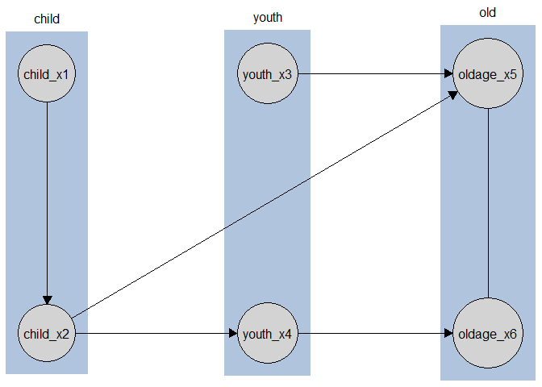

causalDisco provides a unified interface for causal discovery on observational data. It wraps multiple causal discovery backends under a common, consistent syntax.
Motivation
Causal discovery methods exist in many ecosystems, for example in bnlearn, pcalg, or Tetrad, but their APIs vary widely.
causalDisco unifies them under one clear grammar, making it easy to compare results, switch algorithms, and focus on scientific questions rather than package quirks.
Time to hit the disco 🪩
Installation
Install causalDisco
To install causalDisco ensure you first have installed Rust as described below.
Then you can install the stable version of causalDisco from CRAN with suggested dependencies using
install.packages("causalDisco", dependencies = TRUE)or the development version of causalDisco from GitHub using pak:
pak::pkg_install("disco-coders/causalDisco", dependencies = TRUE)Installing Rust
causalDisco depends on the package caugi, which requires Rust to be installed on your system. See https://rust-lang.org/tools/install/ for instructions on how to install Rust.
Installing Java / JDK
causalDisco provides an interface to the Java library Tetrad for causal discovery algorithms. To use algorithms from Tetrad you need to install a Java Development Kit (JDK) >= 21. We recommend Eclipse Temurin (OpenJDK), available at https://adoptium.net for all major operating systems.
Alternatively, we provide a helper function to install Temurin JDK 25 on macOS and Windows:
causalDisco::install_java()The current supported version of Tetrad can then be installed by calling
causalDisco::install_tetrad()To verify everything is set up correctly you can run verify_tetrad():
causalDisco::verify_tetrad()
#> $installed
#> [1] TRUE
#>
#> $version
#> [1] "7.6.10"
#>
#> $java_ok
#> [1] TRUE
#>
#> $java_version
#> [1] "25.0.2"
#>
#> $message
#> [1] "Tetrad found (version 7.6.10). Java version 25.0.2 is OK."Example
With causalDisco you can currently run causal discovery algorithms from the package causalDisco itself, the the R packages bnlearn and pcalg, and the Java application Tetrad with a consistent syntax. Here we provide a simple example of how to use these different backends with the same code structure. We also show how to incorporate tiered background knowledge.
library(causalDisco)
#> causalDisco startup:
#> Java heap size requested: 2 GB
#> Tetrad version: 7.6.10
#> Java successfully initialized with 2 GB.
#> To change heap size, set options(java.heap.size = 'Ng') or Sys.setenv(JAVA_HEAP_SIZE = 'Ng') *before* loading.
#> Restart R to apply changes.
# Load data
data(tpc_example)
pcalg_ges <- ges(
engine = "pcalg", # Use the pcalg implementation
score = "sem_bic" # Use BIC score for the GES algorithm
)
disco_pcalg_ges <- disco(data = tpc_example, method = pcalg_ges)
# We can also pass background knowledge to the engines that support it. Here we use tiered knowledge,
# which is a common way to encode temporal ordering of variables.
kn <- knowledge(
tpc_example,
tier(
child ~ starts_with("child"), # Using the tidyselect syntax to select variables for each tier
youth ~ starts_with("youth"),
old ~ starts_with("old")
)
)
cd_tpc <- tpc(
engine = "causalDisco", # Use the causalDisco implementation
test = "fisher_z", # Use Fisher's Z test for conditional independence
alpha = 0.05 # Significance level for the test
)
disco_cd_tpc <- disco(data = tpc_example, method = cd_tpc, knowledge = kn)
bnlearn_pc <- pc(
engine = "bnlearn", # Use the bnlearn implementation
test = "cor", # Use Pearson correlation test for conditional independence
alpha = 0.05
)
disco_bnlearn_pc <- disco(data = tpc_example, method = bnlearn_pc, knowledge = kn)
# Requires Tetrad to be installed
if (verify_tetrad()$installed && verify_tetrad()$java_ok) {
tetrad_pc <- pc(
engine = "tetrad", # Use the Tetrad implementation
test = "conditional_gaussian", # Use conditional Gaussian test
alpha = 0.05
)
disco_tetrad_pc <- disco(data = tpc_example, method = tetrad_pc, knowledge = kn)
}You can visualize the resulting causal graph using the plot() function:
plot(disco_cd_tpc)
Please see the package vignettes for more detailed introductions to the package and its features, such as how to incorporate knowledge, run causal discovery, and visualize results.